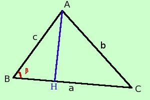

|
Area del triangolo conoscendone la misura di tre lati Consideriamo un triangolo qualunque ABC e supponiamo di conoscerne la misura dei tre lati in queste condizioni posso ricavare una formula che mi permette di avere l'area del triangolo stesso Supponiamo di conoscere AB _ = c BC _ = a AC _ = b con a, b e c numeri noti Partiamo dalla formula trovata dell'area del triangolo conoscendone due lati e l'angolo compreso
Per la formula di duplicazione del seno possiamo scrivere
Ora applico le formule di Briggs
Moltiplico
Ora estraggo a2c2 di radice
semplifico ed ottengo:
|

|

|

|

|